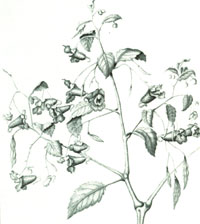
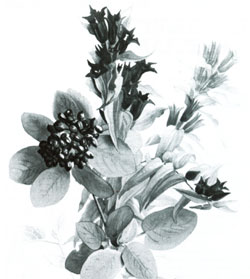

Issue # 134 - October/November 1992
HERBALIST'S NOTEBOOK
Two new members of the natural medicine cabinetJewelweed often stands in full bloom, carrying its odd-shaped, speckly blossoms. This herb is a wonderful remedy for poison ivy, and I always gather a large bunch to keep in my medicine cabinet. I also break off a few of the pretty plants for my plant press-the shock of orange blossoms is beautiful against the ivory pages of my notebook.
In the spotted touch-me-not, Impatiens capensis, blossoms are vibrant orange with reddish-brown spots. The one-inch long flower dangles from a long stalk, and each flower has a sharply curved spur at the rear. In the pale touch-me-not, Impatiens pallida, the blossom is similar in shape, but is bright to pale yellow with only a few pale brownish spots in its throat. This blossom gets a bit larger, up to 1 1/2 inches long and is about as wide as it is as long. However, the rear spur is somewhat shorter than in the Impatiens capensis. In both species, flowers blossom from early summer through fall. They also bear a fruit that looks like a swollen capsule and explodes audibly when touched-hence the name "touch-me-not." The capsule splits into two tight spirals, then flings the seed onto the ground.
Medicinal uses: Jewelweed has a fairly specific and limited medicinal use, but is effective and good to know about in survival situations. Freshly crushed and rubbed onto the skin, the plant helps control the itching of a variety of irritations and is a traditional remedy for poison ivy. If rubbed immediately onto the affected areas, or used as a strong wash after exposure to poison ivy, jewelweed can prevent or alleviate the allergic reaction. A poultice or strong wash (used separately or together) can also heal a rash that has developed. Because jewelweed, in addition to its other attributes, has fungicidal properties, it can help repel an itchy and uncomfortable case of athlete's foot.
Harvesting: All of the above-ground plant can be used. Gather any time it is flowering. If using jewelweed in the wild, simply crush and apply it to the affected area. If using it at home, pour a small amount of boiling water over the fresh plant soon after gathering, let it steep for half an hour, and apply the liquid as a wash several times a day. If not using the plant immediately, puree it in a blender with a little water, and then freeze in ice-cube trays for later use.
Dosages: Crush a fresh plant and apply to affected skin as a poultice, changing it several times daily. Or make a strong tea, pour it over a cloth, and apply directly to the skin. Hold the poultice in place with gauze. If large areas of skin are irritated, use a large container to make a strong tea and pour into a bathtub. Soak for 15 to 20 minutes, several times a day in the jewelweed bathwater.
The other day I drove over to the lake to see how the gentian was doing. It grows near the water, in a stand that edges the woods along a tiny, dirt road. The newest blossoms are pale, deep blue. As they get older, the flowers will turn dark purple, and then start to collapse inward, browning at the edges. I gathered as many of the plants as I could to make a tincture and some tea.
The closed or bottle gentian, G. clausa, has oval-shaped leaves up to four inches long, with smooth margins and pointed tips. The deep blue tubular flowers are closed at the tip and look like long buds. The blossoms are up to 1 1/2 inches long and generally occur at the top of the plant.
The fringe-tipped closed gentiana, G. andrewsii, is similar, but hard to find. The blossoms have fringes between the flower lobes at the tip of the flower. The narrowleaved gentian, G. linearis, has similar flower parts, but inwardly bent tips. The leaves are narrow and lance-shaped. This species grows mainly in the north, in woods and meadows.
Stiff gentian, G. quinquifolia, has funnel-shaped blossoms with fringed tips. The flowers appear more open than the bottle species and are pinkish to lavender, occasionally white. The leaves are opposite, and upper leaves clasp the squarish stem.
Medicinal Uses: Gentian's primary medicinal use is as an herbal bitter. The plant, taken before meals, stimulates the flow of digestive juices, readying the body to digest and assimilate eaten food. Gentian also stimulates the flow of saliva, bile, and gastric juices, helping to empty the stomach. The herb is especially useful in aiding digestion after a heavy meal (when there is no chance for exercise afterward) and relieving heartburn in cases where the digestive processes are weak.
Several of gentian's compounds are anti-inflammatory, and therefore can be used in the case of mild fevers or joint inflammations. Of course, if fever or other problems persist, see your doctor.
Harvesting: The whole plant is used, and all of the different Gentiana species may be used interchangeably. Pull up the plant-root and all-when it is in full flower. Because the fresh plant is strongest, a freshplant tincture is best for preserving its medicinal properties. Rinse soil from roots, chop all plant parts into 1/2 inch pieces, and place in alcohol for two weeks.
To dry the plant for later use as tea, rinse off soil, bundle the stems together, and hang upside down in an airy place away from sun.
Dosages: Use five to 10 drops of the fresh-plant tincture in warm water for 15 to 20 minutes before each meal. Swish the mixture around the mouth like a mouthwash, so that the bitter taste stimulates the digestive processes. For tea, add 1/2 to one teaspoon of fresh or dried chopped plant material to one cup of boiling water. Let steep 10 minutes.
Caution: Using Gentian in excess may cause nausea, vomiting, or diarrhea. Follow the suggested dosage.
Editor's note: Corinne Martin, a graduate of the Institute of Traditional Herbal Medicine in Santa Fe, NM, is a certified clinical herbalist who has studied plants for over a decade. This passage is from her book Earthmagic: Finding and Using Medicinal Herbs, available postpaid for $17.45 from The Countryman Press (P.O. Box 175, Woodstock, VT 05091; 800/245-4151).
|
 |
 |
|